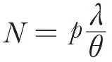
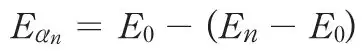
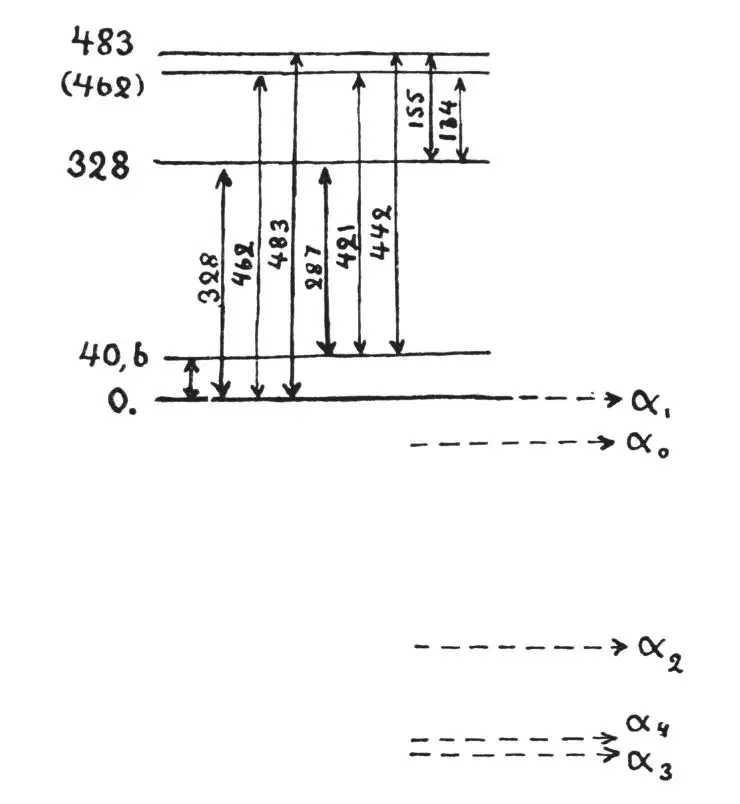

英文
英文伽莫夫
编者按
乔治·伽莫夫是一位俄国科学家，他于1932年离开苏联，在几所西欧的大学里工作。第二次世界大战爆发前夕，他去了美国。他是一位多才多艺的科学家，为公众撰写的普及读物非常清晰易懂，他在美国投身于公众事业，支持原子武器，这些都给人们留下了深刻的印象。在这篇简短的快报文章中，他解释了为什么放射性原子发射出的γ射线可能具有不同的能量。 英文
我们通常假设，C'放射系列产物中观测到的长程α粒子对应于原子核中α粒子的不同量子能级。如果在β衰变之后，原子核处于α粒子占据某个更高能级的激发态，那么就可能发生下面两个过程中的一个：或者是α粒子穿过原子核周围的势垒，携带激发态的所有能量而逃逸（长程α粒子）；或者是α粒子降至最低能级，将剩余能量以电磁辐射（γ射线）的形式发射出去，然后再以普通α粒子的形式逃逸出该原子核。这样，在长程α粒子和之前的放射体放出的γ射线之间就应该存在某种关联。如果p是处于激发态的原子核的相对数量，λ是相应的衰减常数，θ是原子核从激发态跃迁到某个低能态并辐射出能量（以γ量子或者是从该原子电子壳层中发射出的电子的形式）的概率，那么长程α粒子的相对数量就是

。我们已经知道了每一个长程组内的α粒子数量，并且可以通过辐射衰变的波动力学理论计算出相应的λ值，那么我们就可以估算出每一组的θ/p值，得到一个γ辐射发生概率的下限。比如，在钍C'的衰变中，除释放普通的α粒子之外，还有两组长程α粒子，对于从这两个激发态跃迁到正常态的概率，我们知道：θ1 < 0.4×1012秒–1，θ2 < 2×1012秒–1，这个数量级对于辐射这些能量的光量子来说是合适的。当能量减小时，λ（呈指数减小）比θ减小的速度快很多，因此来自较低激发态的长程α粒子数量将会非常少。（这样看来，就不难理解为什么长程α粒子只有在C'的衰变产物中才会出现了，C'过程产物中的正常α粒子的能量远远高于其他已知的任何放射性元素产生的能量。） 英文
罗森布拉姆在最近的实验中遇到了一些困难（《法国科学院院刊》，1929年第1,549页，1930年第1,124页），他发现钍C放射的α射线是由非常接近的5个不同的组组成的。罗森布拉姆给出了其余各组相对于最强的那一组（α0）的能量差和强度：
Eα1 - Eα0 = +40.6千电子伏 Iα1 = 0.3
Eα2 - Eα0 = -287 千电子伏 Iα2 = 0.03
Eα3 - Eα0 = -442 千电子伏 Iα3 = 0.02
Eα4 - Eα0 = -421 千电子伏 Iα4 = 0.0005
如果我们假设这些组分是由于逃逸的α粒子曾处于原子核内的不同激发量子能级而形成的，那么我们将遇到很大的麻烦。钍C精细结构粒子的能量衰减常数λ非常小（λ约为10–2秒–1），而且为了解释各组中何以有相对那么大数量的粒子，我们必须同时假设跃迁概率非常小。我们必须假设钍C原子核可以停留在激发态而不辐射能量长达半个小时！ 英文
然而，如果我们设想一个完全不同于发射长程α粒子的过程，就可以解释这5组α粒子了。假设有两个（或者更多的）α粒子处于钍C原子核的正常能级上。其中一个α粒子逃逸到原子核外后，原子核有可能还保持在激发态，因为剩下的α粒子可能处于某个能量较高的能级上。（在这种情况下，逃逸α粒子的能量低于正常能级，而且它显然与原子核内的任何量子能级都不相等。）随后原子核（这里是钍C''）可以从激发态跃迁到正常态，放出一个γ量子以释放两态之间的能量差。 英文
这样，不同组的相对数量将与γ辐射的概率无关，而只与跃迁积分相关：
W = ʃ f(r1,2)ψE0(α1)ψE0(α2)ψEn(α1)ψEαn(α2)dv1dv2
式中，f(r)是两个α粒子在相距为r时的相互作用能，ψE0和ψEn分别是α粒子在正常态和第n个激发态的本征函数，ψEα是能量为

的逃逸α粒子的本征函数。 英文
按照这种解释，对应于钍C不同精细结构组分的γ射线应该被看作是钍C的γ射线（发射出的电子来自于钍C"原子的K，L，M等壳层），而不能被看作是钍B的γ射线，正如我们在解释长程粒子时预期的那样。图1中所示的钍C"原子核能级图画出了能量的精细结构。 英文

图1 英文
在实测的钍C和钍C"的γ射线能谱中（布莱克，《皇家学会学报》，1925年，第109～166页），我们可以找到对应于以下能量的谱线：40.8，163.3，279.4，345.8，439.0，478.8，144.6千电子伏，这与图1中的能级差吻合得很好。 英文
我们可以看到，能量最高的精细结构组分对应于原子核的正常态，而其他组分则是由损失掉部分能量的普通α粒子离开处于激发态的原子核造成的。 英文
我非常感谢佩尔斯博士和罗森菲尔德博士给我提供在这里工作的机会。 英文
（王静 翻译；江丕栋 审稿）